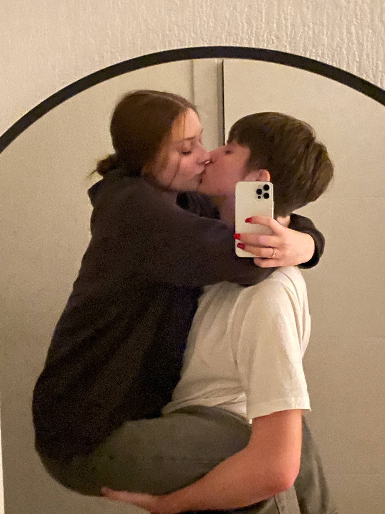
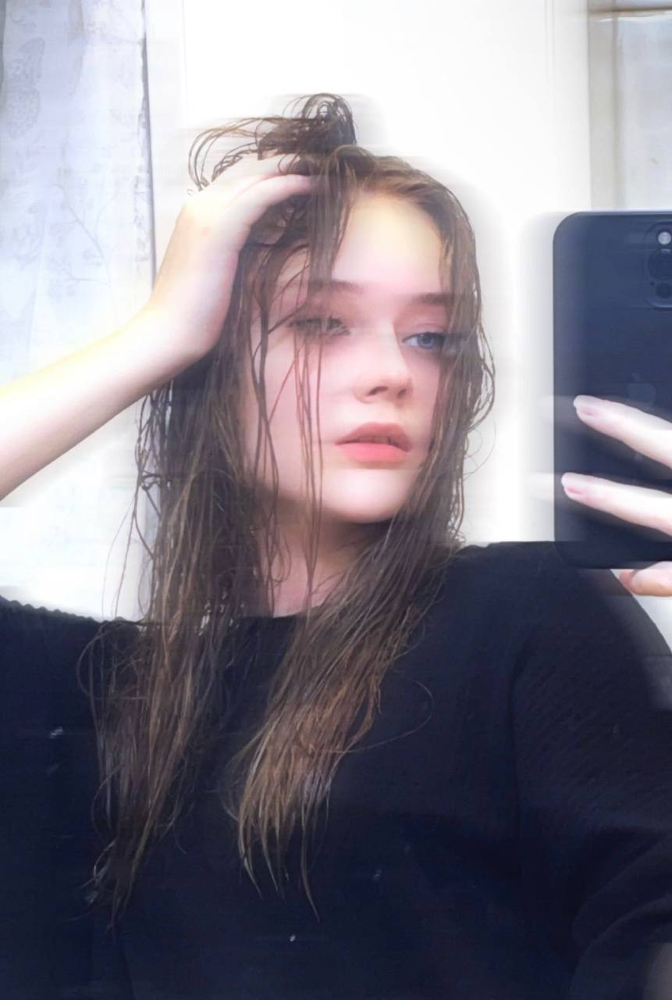

Наша первая совместная фотография
Ты на ней такая застенчивая и невероятно милая...

Мой самый любимый человек
Этот взгляд заставляет мое сердце биться чаще.
Несколько причин, почему ты совершенна:
- Твоя улыбка — мой источник энергии.
- Ты находишь радость в мелочах и учишь этому меня.
- С тобой я чувствую, что могу стать лучше.
- Твой смех — самая красивая мелодия.
- Ты невероятно добрая и заботливая.
Полина, иногда я пересматриваю эти кадры и понимаю, как мне повезло. Каждый день с тобой — это подарок.